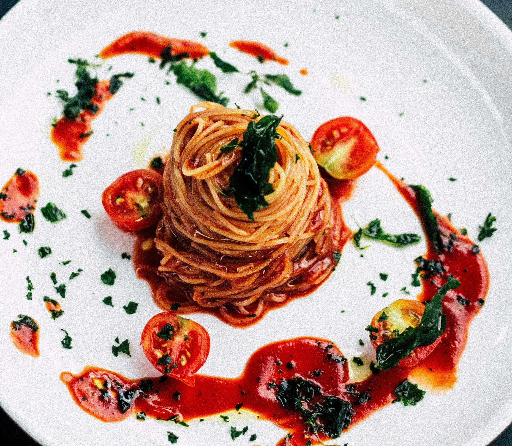

Pasta with Tomato Sauce

Ingredients:
- 200g pasta
- 2 tablespoons olive oil
- 1 garlic clove, minced
- 1 can (400g) diced tomatoes
- Salt and pepper to taste
- Fresh basil leaves for garnish
Steps:
-
Cook the pasta according to package instructions. Drain and set
aside.
-
Heat olive oil in a pan over medium heat and sauté the garlic until
fragrant.
-
Add the diced tomatoes and season with salt and pepper. Simmer for
10-15 minutes.
- Mix the cooked pasta into the sauce and toss to combine.
- Garnish with fresh basil leaves and serve hot.
Chicken Curry
.jpg)
Ingredients:
- 500g chicken breast, cubed
- 2 onions, finely chopped
- 2 tomatoes, chopped
- 1 tablespoon curry powder
- 1 teaspoon cumin powder
- 1 teaspoon garlic paste
- 1 teaspoon ginger paste
- 1 cup coconut milk
- Salt and pepper to taste
- Fresh cilantro for garnish
Steps:
- Heat oil in a large pan and sauté onions until golden brown.
- Add garlic and ginger paste, and cook for another 2 minutes.
-
Stir in curry powder, cumin powder, and chopped tomatoes. Cook for 5
minutes.
-
Add the chicken cubes, salt, and pepper. Cook until the chicken is
browned.
-
Pour in coconut milk and let it simmer for 20 minutes until the
chicken is cooked through.
- Garnish with fresh cilantro and serve with rice or naan.
Chocolate Cake
.jpg)
Ingredients:
- 1 1/2 cups all-purpose flour
- 1 cup sugar
- 1/2 cup cocoa powder
- 1 teaspoon baking powder
- 1 teaspoon baking soda
- 1/2 teaspoon salt
- 2 large eggs
- 1 cup buttermilk
- 1/2 cup vegetable oil
- 1 teaspoon vanilla extract
- 1 cup boiling water
Steps:
-
Preheat your oven to 350°F (175°C) and grease and flour a cake pan.
-
In a large bowl, mix flour, sugar, cocoa powder, baking powder,
baking soda, and salt.
-
Add eggs, buttermilk, oil, and vanilla extract. Mix until smooth.
-
Slowly add boiling water to the batter, mixing until smooth (the
batter will be thin).
-
Pour the batter into the prepared cake pan and bake for 30-35
minutes, or until a toothpick comes out clean.
- Let the cake cool before frosting or serving.